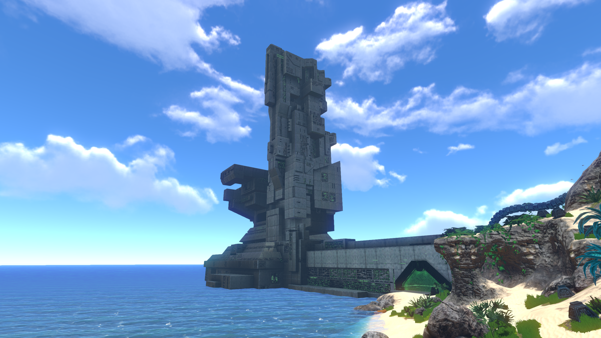
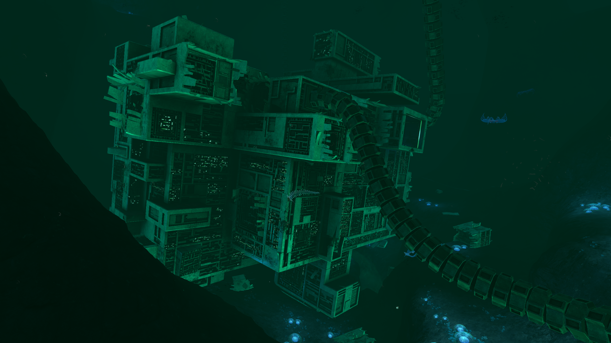
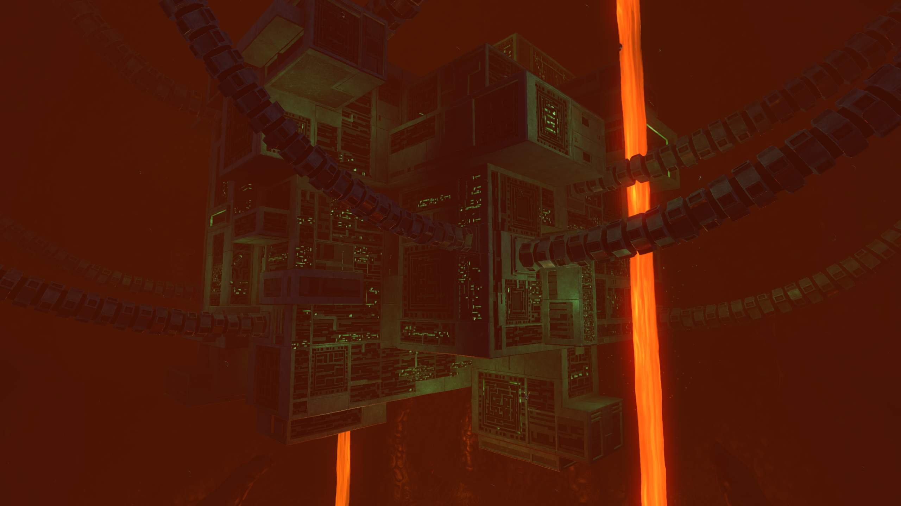

Precursors Bases
  
First picture: QEP Second Picture: DRF Third Picture: PTPG Fourth Picture: PCF
Quarantine Enforcement Platform
The Quarantine Enforcement Platform (QEP) is a massive Precursor weapon system that is located on the Mountain Island. It is the source of the energy beams responsible for causing both the Degasi and Aurora to crash on Planet 4546B, as well as eventually destroying the Sunbeam during it's rescue attempt.
The weapon was built by the Precursor race around one thousand years ago, in order to prevent the spread of the Carar bacterium from Planet 4546B to other planets.
The Player must locate a purple Precursor Artifact to gain entrance to the facility; seven of them are located on the island, one of them located inside the facility itself on the balcony near the barrier to the control room, and one is located in an underwater cave near the base. The player must cure himself of Carar before being able to disable the facility and leave the planet. If the player attempts to disable the facility before they cure themselves of Carar, they will be denied.
To view the weapon aiming and firing, type 'precursorgunaim' into the console and to view just the firing FX, type "playsunbeamfx" into the console.
Warpers can be found patrolling in the waters around the Quarantine Enforcement Platform.
A small number of Ion Crystals can be found here.
Disease Research Facility
The Disease Research Facility (DRF) is an abandoned and demolished Precursor Base located in a cave that can be accessed from the Lost River Junction. Built around one thousand years ago, some time before the imprisonment of the Sea Emperor, the main purpose of this Facility was to infect creatures with the Carar Bacterium. The sole specimen that survived Carar was sent to the Primary Containment Facility for further testing in order to synthesize a cure for the bacterium.
The Disease Research Facility is heavily damaged, and unlike the other bases, is completely filled with water. It lies partially suspended by several loose-hanging cables, with several sections of destroyed cables found scattered around the perimeter of the facility. The base was attacked and destroyed by a Sea Dragon Leviathan (which is found dead via skeletal remains outside the base) in an attempt to retrieve its stolen eggs - an event that also unleashed the Carar bacterium into the native ecosystem and prompted the Precursors to initiate their planetary quarantine by activating the Quarantine Enforcement Platform.
The Disease Research Facility was set up partially to study the skeleton in the Bones Field - the remains of a ten million year old super-predator.
The interior of the Disease Research Facility is mainly a straight path, from the entrance to the Warper room, with some deviation. Starting at the entrance, the right-hand wall contains an Ion Crystal and a force field room that can be unlocked with a Purple Precursor Artifact; this room contains a Data Download entitled "Alien Research Data". Continuing along the path, which turns left and downwards, there is another Ion Crystal and a small tank on the left. The main turns right at a room containing the Sea Dragon's egg and various fauna. The path turns right again, with a large aquarium on the left, accessible via a broken window, housing Skeletal Remains. At the end of the path is a room with various Warper parts, including a torso that can be scanned. A data terminal in this room, when interacted with, triggers the PDA to prompt the Player to perform a self-scan, which reveals the Carar has spread to the skin on the player's hands.
Precursor Thermal Power Generator
The Precursor Thermal Power Generator (PTPG) is the smallest of the four Precursor Bases. It can be found in the Inactive Lava Zone, within the Lava Castle. It was built around one thousand years ago.
The generator seems to be the source of power for most of the Precursor technology on the planet.
There are two locked doors inside the facility, both of which require only Purple Precursor Artifacts to unlock. Behind the first door is the Blue Precursor Artifact, which will be used to access the Primary Containment Facility. Behind another door are three data terminals, one of which unlocks the Blueprints for the Ion Battery and Ion Power Cell. There is also an Ion Crystal Deposit located inside.
Alien Drones roam inside the base, acting as a hazard for the Player.
Primary Containment Facility
The Primary Containment Facility (PCF), also known as the Emperor Containment Facility or Sea Emperor Prison or merely the Prison, is an in-development Precursor Base located within the Active Lava Zone that will serve as the final major story location. It was built by the Precursors around one thousand years ago and is where the last Sea Emperor is contained, along with the five remaining Sea Emperor Eggs. There are two entrances to the cavern containing the Facility; located at -300 -1270 -150 and 90 -1240 360, southeast and directly north of the Lava Castle, respectively.
The Primary Containment Facility will require the Blue Precursor Artifact to unlock, which is found inside the Precursor Thermal Power Generator.
The Primary Containment Facility, like the other Precursor Bases, was built a little under one thousand years ago. It was purpose-built to contain the Sea Emperor after it was discovered that it was immune to Carar. The aquarium section was originally all inorganic with several teleporter hubs set up (though none large enough to allow the Sea Emperor's escape). However, as creatures began migrating into it, they brought with them flora seeds along with loose sand and mud. Over time, the aquarium became a thriving ecosystem with the Sea Emperor at the heart. At an unknown date, the Sea Emperor laid five eggs, which the Precursors took and placed in the Precursor Egg Incubator to stimulate the hatching process as it was deduced that the young would be a more viable source of the cure, rather than their parent who was weak. But the aquarium was not a suitable environment for the eggs to hatch which was built to match the ideal environment for an adult Sea Emperor, which differ from the ideal conditions for a juvenile Emperor, causing the eggs to go into a form of natural stasis for a seemingly indefinite amount of time, kept alive by the incubator. Numerous Ion Crystals will be found here.